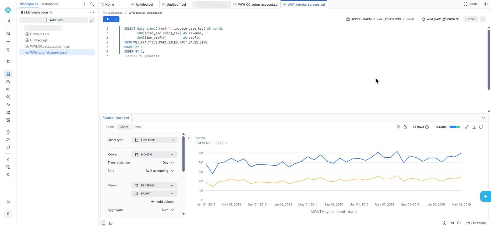

Chapter 10 · Transforming with dbt
The Sales Data Mart
Gold is the complete, conformed model of the business. A data mart is a small, focused slice of it for one audience: here, everyone who reports on sales. It has one fact table at a single, obvious grain and six dimensions with friendly column names, so a Power BI developer can build reports without knowing anything about the source system.
The grain, and why it matters
The grain is one row per invoice line: one product on one invoice. Everything else follows from that sentence. Quantity and money can be added up across any dimension; an invoice's header facts, such as its delivery method, repeat on each of its lines; and invoice and order numbers stay on the fact as degenerate dimensions, so you can always drill back to a source document.
{{ config(alias='fact_sales_line') }}
select
l.invoice_line_id as sales_line_key,
l.invoice_date as invoice_date_key, -- DIM_DATE, role 1
l.delivery_date as delivery_date_key, -- DIM_DATE, role 2
coalesce(cu.customer_key, -1) as customer_key, -- DIM_CUSTOMER, sold to
coalesce(bt.customer_key, -1) as bill_to_customer_key, -- DIM_CUSTOMER, billed to
coalesce(si.stock_item_key, -1) as stock_item_key,
coalesce(sp.salesperson_key, -1) as salesperson_key,
coalesce(ge.geography_key, -1) as delivery_geography_key,
coalesce(dm.delivery_method_key, -1) as delivery_method_key,
l.invoice_id, l.invoice_line_id, l.order_id, ... -- degenerate dimensions
l.quantity, l.extended_price, l.tax_amount, l.total_excluding_tax, l.line_profit
from {{ ref('int_invoice_lines_enriched') }} as l
...One date dimension, two roles
The invoice date and the delivery date both point at the same DIM_DATE. In Power BI, make one relationship active and the other inactive (use USERELATIONSHIP in a measure), or load the date table twice under different names. Don't copy the data into two date tables.
The mart's SCD2 dimensions use the same key formula as Gold, so a customer key means the same version of the same customer in both. The mart and Gold are conformed.
Answering the questions it was built for
These are real results from the lab. Revenue is excluding tax.
Revenue and profit by fiscal year
select d.fiscal_year, count(*) as lines, sum(f.total_excluding_tax) as revenue, sum(f.line_profit) as profit
from WWI_ANALYTICS.MART_SALES.FACT_SALES_LINE f
join WWI_ANALYTICS.MART_SALES.DIM_DATE d on d.date_key = f.invoice_date_key -- mart's calendar via GOLD.DIM_DATE
group by 1 order by 1;| Fiscal year | Lines | Revenue | Profit | Margin |
|---|---|---|---|---|
| FY2013 | 51,160 | 38,373,718.70 | 19,143,873.90 | 49.9 % |
| FY2014 | 64,755 | 48,879,106.25 | 24,283,242.45 | 49.7 % |
| FY2015 | 71,286 | 53,827,320.95 | 26,815,310.85 | 49.8 % |
| FY2016 (to 31 May) | 41,064 | 31,181,195.30 | 15,486,753.70 | 49.7 % |
The fiscal year starts in November, and the data stops on 31 May 2016, so FY2016 covers only seven months.
By sales territory and customer category
| Territory | Revenue |
|---|---|
| Southeast | 38,265,165.75 |
| Mideast | 25,758,309.30 |
| Southwest | 23,924,720.30 |
| Plains | 23,307,175.85 |
| Great Lakes | 20,153,233.85 |
| Far West | 19,879,592.80 |
| Rocky Mountain | 11,076,949.95 |
| New England | 7,696,054.80 |
| External | 2,200,138.60 |
| Customer category | Customers | Revenue |
|---|---|---|
| Novelty Shop | 459 | 123,220,010.30 |
| Supermarket | 58 | 14,360,495.80 |
| Gift Store | 48 | 11,683,614.10 |
| Computer Store | 51 | 11,560,346.80 |
| Corporate | 47 | 11,436,874.20 |
Products, people and delivery
- Chiller vs dry stock: chilled goods earned 1,142,515.20 at a 43.9 % margin; dry goods 171,118,826.00 at 49.8 %.
- Top salesperson: Archer Lamble with 17,944,098.45, ahead of Kayla Woodcock (17,566,878.40) and Hudson Onslow (17,315,102.70).
- Delivery: every invoice line in this sample was delivered by Delivery Van, on average 1.00 day after the invoice.
- Credit notes: none in this sample (0 of 228,265 lines); the flag is there for real data.

Key takeaways
- A mart serves one audience: one fact at one clear grain, a handful of friendly dimensions.
- Role-playing dimensions (two dates, two customers) use one table, not copies.
- Keys are conformed with Gold, so mart and Gold agree on every customer version.
- Degenerate invoice and order numbers let every report drill back to a document.